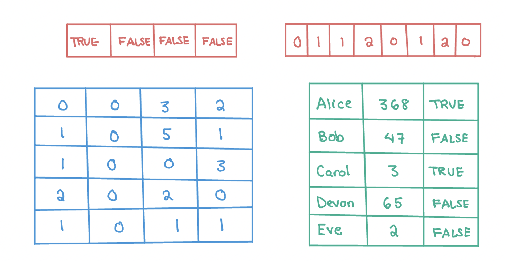
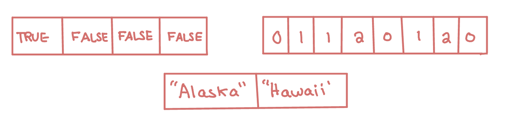

2. Data Structures in R#
In this chapter, we will demonstrate the key data structures in R. A data structure is how information is stored in R, and it informs R how to interpret our code. Any object is a named instance of a data structure. For example, the object ex_num is a vector of numeric type.
ex_num <- 4
The main data structures in R are vectors, factors, matrices, arrays, lists, and data frames. These structures are distinguished by their dimensions and type of data they store. For example, a vector is a 1-dimensional data structure of the same type whereas a data frame is a 2-dimensional data structure where each column has the same type. We will cover each structure except for arrays, which are an extension of matrices that allow for data that is more than 2-dimensional.
{kind=link}
Data Types#
Each individual value in R is a type: logical, integer, double, or character. We can think of these as the building blocks of all data structures. Below, we can use the typeof function to find the type, which shows that the value of ex_num is a double. A double is a numeric value that can store a decimal (as opposed to an integer, which is a numeric value that can only take whole number values).
typeof(ex_num)
We now create an integer object ex_int: to indicate to R that we want to restrict our values to integer values, we use an L after the number. For the examples in this book, though, we will not need to use this notation.
ex_int <- 4L
typeof(ex_int)
Both ex_var and ex_int are numeric objects, but we can also work with two other kinds of types: characters (e.g. “php”, “stats”) and booleans (TRUE, FALSE), also known as logicals.
ex_bool <- TRUE
ex_char <- "Alice"
typeof(ex_bool)
typeof(ex_char)
One important characteristic of logical objects is that R will also interpret them as 0/1. This means they can be added like so:
TRUE+FALSE+TRUE
To create all of the above objects, we used the assignment operator <-. We could intead use the = operator, which can also be used for assignment but also has other meanings. It is generally preferable to stick to using <-.
Vectors#
In the examples above, we created objects with a single value. However, R actually uses a vector of length 1 to store this information. Vectors are 1-dimensional data structures that can store multiple data values of the same type (e.g. character, boolean, or numeric).
{kind=link}
We can confirm this by using the is.vector function, which returns TRUE if the inputted argument is a vector.
is.vector(ex_bool)
One way to create a vector with multiple values is to use the combine function c(). Below we create two vectors: one with the days of the week and one with the amount of rain on each day.
days <- c("Monday", "Tuesday", "Wednesday", "Thursday", "Friday")
rain <- c(5, 0.1, 0, 0, 0.4)
Remember, vectors cannot store objects of different types. Because of this, R automatically converts the numeric value to be a character in the code below.
c("Monday", 5)
- 'Monday'
- '5'
If we check the classes of these two objects using the class() function, we will see that R tells us the type of the data (character and numeric).
class(days)
class(rain)
What happens when we create an empty vector? What is the class?
ex_empty <- c()
class(ex_empty)
In this case, there is no specified type yet. If we wanted to specify the type, we could make an empty vector using the vector() function.
ex_empty <- vector(mode = "numeric")
class(ex_empty)
Another way to create a non-empty vector is with the rep() or seq() functions. The first function rep(x, times) takes in a vector x and a number of times times and outputs x repeated that many times. Let’s try this with a single value below. The second function seq(from, to, step) takes in a starting value, end value, and step size (all numeric values) and returns a sequence from from in increments of step until a maximum value of to is reached.
rep(0, 5)
rep("Monday", 4)
seq(1, 5, 1)
seq(0, -10, -2)
- 0
- 0
- 0
- 0
- 0
- 'Monday'
- 'Monday'
- 'Monday'
- 'Monday'
- 1
- 2
- 3
- 4
- 5
- 0
- -2
- -4
- -6
- -8
- -10
The mathematical operators we saw in the last chapter ((e.g. +, -, *, /, ^) can all be applied to numeric vectors and will apply element-wise. That is, in the code below, the two vectors are added together by index. This holds true for some of the built-in math functions as well:
exp- expoentiallog- logsqrt- square rootabs- absolute valueround- round to nearest integer valueceiling- round up to the nearest integer valuefloor- round down to the nearest integer value
c(1,2,3) + c(1,1,1)
c(1,2,3) + 1 # equivalent to the code above
sqrt(c(1,4,16))
- 2
- 3
- 4
- 2
- 3
- 4
- 1
- 2
- 4
Indexing a Vector#
Now that we have a vector, we may want to access the values. To do so, we index the values starting from index 1: the first value has index 1, the second value has index 2, etc. This is what we mean when we say a vector is 1-dimensional. Below, we use these indices to find the value at index 1 and the value at index 4.
days[1]
days[4]
We can either access a single value or a subset of values using a vector of indices. See what happens when you use a vector of indices c(1,4) and then try using -c(1,4) and see what happens then. In the first case, we get the values at index 1 and at index 4. In the second case, we get all values except at those indices. The - indicates that we want to remove rather than select these indices.
days[c(1,4)]
days[-c(1,4)]
- 'Monday'
- 'Thursday'
- 'Tuesday'
- 'Wednesday'
- 'Friday'
However, always indexing by the index value can sometimes be difficult. One extra feature of vectors is that we can associate a name with each value. Below, we update the names of the vector rain to be the days of the week and then find Friday’s rain count by indexing with the name.
names(rain) <- days
print(rain)
rain["Friday"]
Monday Tuesday Wednesday Thursday Friday
5.0 0.1 0.0 0.0 0.4
We can also index a vector using TRUE and FALSE values. If we have a vector of booleans that is the same length as our original vector, then this will return all the values that correspond to a TRUE value. Below, this will return the first and fourth values.
ind_bools <- c(TRUE, FALSE, FALSE, TRUE, FALSE)
days[ind_bools]
- 'Monday'
- 'Thursday'
This is useful because we can use logic to access certain values. We will see more about this later on.
Editing a Vector and Calculations#
After we create a vector, we may need to update it or change it. For example, we may want to change a value. We can do so using indexing. Below, we update the rain value for Friday using the assignment operator.
rain["Friday"] <- 0.5
rain
- Monday
- 5
- Tuesday
- 0.1
- Wednesday
- 0
- Thursday
- 0
- Friday
- 0.5
Further, we may need to add extra entries. We can do so using the c() function again but this time passing in a vector as our first argument. This will create a single vector with all values. Below, we add two days to both vectors and then check the length of the updated vector rain. The length() function returns the length of a vector.
length(rain)
days <- c(days,"Saturday", "Sunday") # add the weekend with no rain
rain <- c(rain,0, 0)
length(rain)
We can also call some useful functions on vectors. For example, the sum(), max(), and min() functions will return the sum, maximum value, and minimum value of a vector, respectively.
Practice Question#
Create a vector of the odd numbers from 1 to 11 using the seq() function. Then, find the third value in the vector using indexing.
# Insert your solution here:
Common Vector Functions#
Below we list some of the most common vector functions that are available in base R. All of these functions assume that the vector is numeric. If we pass the function a logical vector, it will convert it to 0/1 first, and if we pass it a character vector, it will return an error.
sum() - summation
median() - median value
mean() - mean
sd() - standard deviation
var() - variance
max() - maximum value
which.max() - index of the first element with the maximum value
min() - minimum value
which.min() - index of the first element with the minimum value
Try these out using the vector rain. Note that R is case sensitive - Mean() is considered different from mean() so if we type Mean(rain) R will tell us that it cannot find this function.
mean(rain)
min(rain)
which.min(rain)
We may also be interested in the order of the values. The `sort` function sorts the values of a vector whereas the `order` function returns the permutation of the elements to be in sorted order. The last line of code below sorts the days of the week from smallest to largest rain value.
Error in parse(text = x, srcfile = src): <text>:2:4: unexpected symbol
1:
2: We may
^
Traceback:
rain
order(rain)
days[order(rain)]
- Monday
- 5
- Tuesday
- 0.1
- Wednesday
- 0
- Thursday
- 0
- Friday
- 0.5
- 6
- 0
- 7
- 0
- 3
- 4
- 6
- 7
- 2
- 5
- 1
- 'Wednesday'
- 'Thursday'
- 'Saturday'
- 'Sunday'
- 'Tuesday'
- 'Friday'
- 'Monday'
Both of these functions have an extra possible argument decreasing, which has a default value of FALSE. We can specify this to be TRUE to find the days of the week sorted from largest to smallest rainfall.
days[order(rain, decreasing=TRUE)]
- 'Monday'
- 'Friday'
- 'Tuesday'
- 'Wednesday'
- 'Thursday'
- 'Saturday'
- 'Sunday'
Factors#
A factor is a special kind of vector that behaves exactly like a regular vector except that it assumes the vector represents values from a category. In particular, it keeps track of all possible values of that category, which are called the levels of the factor. Factors will be especially helpful when we start getting into data analysis and have categorical variables. The as.factor() function will convert a vector to a factor.
days <- c("Monday", "Tuesday", "Wednesday", "Monday", "Thursday", "Wednesday")
days_fct <- as.factor(days)
class(days_fct)
levels(days_fct)
- 'Monday'
- 'Thursday'
- 'Tuesday'
- 'Wednesday'
Above, we did not specify the possible levels for our variable. Instead, R found all values in the vector days and set these equal to the levels of the factor. Because of this, if we try to change one of the levels to ‘Friday’, it will give us an error. Uncomment the line below to see the error it gives.
#days_fct[2] <- "Friday"
We can avoid this error by specifying the levels using the factor function instead of the as.factor function.
days <- c("Monday", "Tuesday", "Wednesday", "Monday", "Thursday", "Wednesday")
days_fct <- factor(days,
levels = c("Monday", "Tuesday", "Wednesday", "Thursday",
"Friday", "Sunday", "Saturday"))
class(days_fct)
levels(days_fct)
days_fct[2] <- "Friday"
- 'Monday'
- 'Tuesday'
- 'Wednesday'
- 'Thursday'
- 'Friday'
- 'Sunday'
- 'Saturday'
Matrices#
Matrices are similar to vectors in that they store data of the same type, but matrices are two-dimensional (as opposed to one-dimensional vectors), and consist of both rows and columns.
{kind=link}
Below, we create a matrix reporting the daily rainfall over multiple weeks. We can create a matrix using the matrix(data, nrow, ncol, byrow) function. This creates a nrow by ncol matrix from the vector data values filling in by row if byrow is TRUE and by column otherwise. Run the code below. Then, change the last argument to byrow=FALSE and see what happens to the values.
rainfall <- matrix(c(5,6,0.1,3,0,1,0,1,0.4,0.2,0.5,0.3,0,0), ncol=7, nrow=2, byrow=TRUE)
rainfall
| 5 | 6.0 | 0.1 | 3.0 | 0.0 | 1 | 0 |
| 1 | 0.4 | 0.2 | 0.5 | 0.3 | 0 | 0 |
We can find the dimensions of a matrix using the nrow and ncol functions, which return the number of rows, the the number of columns, respectively. Additionally, the dim function returns both.
nrow(rainfall)
ncol(rainfall)
dim(rainfall)
- 2
- 7
Indexing a Matrix#
Since matrices are two-dimensaional, a single value is indexed by both its row number and its column number. This means that to access a subset of values in a matrix, we need to provide row and column indices. Below, we access a single value in the 1st row and the 4th column. The first value is always the row index and the second value is always the column index.
rainfall[1,4]
As before, we can also provide multiple incides to get multiple values. Below, we choose multiple columns but we can also choose multiple rows (or multiple rows and multiple columns!).
rainfall[1,c(4,5,7)]
- 3
- 0
- 0
As with vectors, we can also use booleans to index a matrix by providing boolean values for the rows and/or columns. Note that below we give a vector for the row indices and no values for the columns. Since we did not specify any column indices, this will select all of them.
rainfall[c(FALSE, TRUE), ]
- 1
- 0.4
- 0.2
- 0.5
- 0.3
- 0
- 0
Let’s do the opposite and select some columns and all rows.
rainfall[ ,c(TRUE, TRUE, FALSE, FALSE, FALSE, FALSE, FALSE)]
| 5 | 6.0 |
| 1 | 0.4 |
As with vectors, we can specify row names and column names to access an entry instead of using indices.
colnames(rainfall) <- c("Monday", "Tuesday", "Wednesday", "Thursday",
"Friday", "Saturday", "Sunday")
rownames(rainfall) <- c("Week1", "Week2")
rainfall["Week1",c("Friday","Saturday")]
- Friday
- 0
- Saturday
- 1
Editing a Matrix#
If we want to change the values in a matrix, we need to index those values and then give the new value(s). Below, we change a single entry to be 3 and then update several values to all be 0. Note that we do not provide multiple 0’s on the right-hand side, as R will infer that all values be set to 0.
rainfall["Week1", "Friday"] <- 3
rainfall["Week1", c("Monday", "Tuesday")] <- 0
print(rainfall)
Monday Tuesday Wednesday Thursday Friday Saturday Sunday
Week1 0 0.0 0.1 3.0 3.0 1 0
Week2 1 0.4 0.2 0.5 0.3 0 0
Further, we can append values to our matrix by adding rows or columns through the rbind and cbind functions. The first function appends a row (or multiple rows) to a matrix and the second appends a column (or multiple columns). Note that below I provide a row and column name when passing in the additional data (if I didn’t, then those rows and columns would not be named).
rainfall <- rbind(rainfall, "Week3" = c(0.4, 0.0, 0.0, 0.0, 1.2, 2.2, 0.0))
rainfall <- cbind(rainfall, "Total" = c(7.1, 2.4, 3.8))
print(rainfall)
Monday Tuesday Wednesday Thursday Friday Saturday Sunday Total
Week1 0.0 0.0 0.1 3.0 3.0 1.0 0 7.1
Week2 1.0 0.4 0.2 0.5 0.3 0.0 0 2.4
Week3 0.4 0.0 0.0 0.0 1.2 2.2 0 3.8
Here is an example where we bind two matrices by column.
A <- matrix(c(1,2,3,4), nrow=2)
B <- matrix(c(5,6,7,8), nrow=2)
C <- cbind(A, B)
C
| 1 | 3 | 5 | 7 |
| 2 | 4 | 6 | 8 |
As with vectors, most mathematical operators (+, -, *, / etc.) are applied element-wise in R.
A+B
| 6 | 10 |
| 8 | 12 |
exp(C)
| 2.718282 | 20.08554 | 148.4132 | 1096.633 |
| 7.389056 | 54.59815 | 403.4288 | 2980.958 |
Practice Question#
Create a 3x4 matrix of all 1’s using the rep() and matrix() functions. Then select the first and third columns using indexing.
# Insert your solution here:
Data Frames#
Matrices can store data such as the rainfall data when everything is of the same type. However, if we want to capture more complex data records, we also want to allow for different measurement types: this is where data frames come in. A data frame is like a matrix in that it is two-dimensional, but unlike matrices, dataframes allow for each column to be a different type. In this case, each row corresponds to a single data entry (or observation) and each column corresponds to a different variable.
{kind=link}
For example, suppose that, for every day in a study, we want to record the temperature, rainfall, and day of the week. Temperature and rainfall can be numeric values, but day of the week will be character type. We create a data frame using the data.frame() function. Note that I am providing column names for each vector (column).
The head() function prints the first six rows of a data frame (to avoid printing very large datasets). In our case, it will show all the data because we only created four rows. The column names are displayed as well as their type. By contrast, the tail() function prints the last six rows of a data frame.
weather_data <- data.frame(day_of_week = c("Monday","Tuesday","Wednesday","Monday"),
temp = c(70,62,75,50), rain = c(5,0.1,0.0,0.5))
head(weather_data)
| day_of_week | temp | rain | |
|---|---|---|---|
| <chr> | <dbl> | <dbl> | |
| 1 | Monday | 70 | 5.0 |
| 2 | Tuesday | 62 | 0.1 |
| 3 | Wednesday | 75 | 0.0 |
| 4 | Monday | 50 | 0.5 |
It can be useful to find the dimensions of a data frame or to see its number of rows and columns. The dim, nrow, and ncol functions return the dimensions, number of rows, and number of columns of a data frame, respectively.
dim(weather_data)
nrow(weather_data)
ncol(weather_data)
- 4
- 3
The column names can be found (or assigned) using the colnames or names function. These were specified when I created the data. On the other hand, the row names are currently the indices.
colnames(weather_data)
rownames(weather_data)
names(weather_data)
- 'day_of_week'
- 'temp'
- 'rain'
- '1'
- '2'
- '3'
- '4'
- 'day_of_week'
- 'temp'
- 'rain'
We could update the row names to be more informative as with a matrix.
rownames(weather_data) <- c("6/1", "6/2", "6/3", "6/8")
head(weather_data)
| day_of_week | temp | rain | |
|---|---|---|---|
| <chr> | <dbl> | <dbl> | |
| 6/1 | Monday | 70 | 5.0 |
| 6/2 | Tuesday | 62 | 0.1 |
| 6/3 | Wednesday | 75 | 0.0 |
| 6/8 | Monday | 50 | 0.5 |
Indexing a Data Frame#
We can select elements of the data frame using its indices in the same way as matrices. Below, we access a single value and then a subset of our data frame. The subset returned is itself a data frame. Note that both of the lines below return a data frame.
weather_data[1,2]
weather_data[1,c("day_of_week","temp")]
| day_of_week | temp | |
|---|---|---|
| <chr> | <dbl> | |
| 6/1 | Monday | 70 |
Another useful way to access the columns of a data frame is by using the $ accessor and the column name.
weather_data$day_of_week
weather_data$temp
- 'Monday'
- 'Tuesday'
- 'Wednesday'
- 'Monday'
- 70
- 62
- 75
- 50
The column day_of_week is a categorical variable in that it can only take on a limited number of values. For this kind of variable, it is often useful to convert that column to a factor as we did below. It is especially useful to convert a column to a factor if you have a numerical value corresponding to a category (e.g. 0/1 encodings).
weather_data$day_of_week <- factor(weather_data$day_of_week)
levels(weather_data$day_of_week)
- 'Monday'
- 'Tuesday'
- 'Wednesday'
Now, let’s suppose that I want to get the temperature of the days when it rained. I can do so using the code below. The first line tests whether each entry in the vector of rain values is greater than zero. This is called a logic test. What type of output is this?
The next line uses that result to index the temperature vector (remember TRUE indicates to select that entry and FALSE indicates not to).
weather_data$rain > 0
weather_data$temp[weather_data$rain > 0]
- TRUE
- TRUE
- FALSE
- TRUE
- 70
- 62
- 50
Editing a Data Frame#
As with matrices, we can change values in a data frame by indexing those entries.
weather_data[1, "rain"] <- 2.2
weather_data
| day_of_week | temp | rain | |
|---|---|---|---|
| <fct> | <dbl> | <dbl> | |
| 6/1 | Monday | 70 | 2.2 |
| 6/2 | Tuesday | 62 | 0.1 |
| 6/3 | Wednesday | 75 | 0.0 |
| 6/8 | Monday | 50 | 0.5 |
The rbind functions and cbind functions also work for data frames in the same way as for matrices. However, another way to add a column is to directly use the $ accessor. Below, we add a categorical column called heavy_traffic.
weather_data$heavy_traffic <- as.factor(c(1, 0, 0, 0))
weather_data
| day_of_week | temp | rain | heavy_traffic | |
|---|---|---|---|---|
| <fct> | <dbl> | <dbl> | <fct> | |
| 6/1 | Monday | 70 | 2.2 | 1 |
| 6/2 | Tuesday | 62 | 0.1 | 0 |
| 6/3 | Wednesday | 75 | 0.0 | 0 |
| 6/8 | Monday | 50 | 0.5 | 0 |
Practice Question#
Add a column to weather_data called air_quality_index using the rep() function so that all values are NA (the missing value in R). Then, index the second value of this column and set it to be 57.
# Solution:
Lists#
A data frame is actually a special kind of another data structure called a list, which is a collection of objects under the same name. These objects can be vectors, matrices, data frames, or even other lists! With a list there does not have to be any relation in size, type, or other attribute between different members of the list. Below, we create an example list using the list function, which takes in a series of objects. What are the types of each element of the list? We can access each element using the index, but here we need to use double brackets.
ex_list <- list("John", c("ibuprofen", "metformin"), c(136, 142, 159))
print(ex_list)
ex_list[[2]]
[[1]]
[1] "John"
[[2]]
[1] "ibuprofen" "metformin"
[[3]]
[1] 136 142 159
- 'ibuprofen'
- 'metformin'
More often, however, it is useful to name the elements of the list for easier access. Let’s create this list again but this time give names to each object.
ex_list <- list(name="John", medications = c("ibuprofen", "metformin"),
past_weights = c(136, 142, 159))
print(ex_list)
ex_list$medications
$name
[1] "John"
$medications
[1] "ibuprofen" "metformin"
$past_weights
[1] 136 142 159
- 'ibuprofen'
- 'metformin'
To edit a list, we can index and access different objects in the list. Additionally, we can add objects to the list using the $ accessor.
ex_list$supplements = c("vitamin D", "biotin")
ex_list
- $name
- 'John'
- $medications
-
- 'ibuprofen'
- 'metformin'
- $past_weights
-
- 136
- 142
- 159
- $supplements
-
- 'vitamin D'
- 'biotin'
ex_list$toppings[2] = "collagen"
ex_list
- $name
- 'John'
- $medications
-
- 'ibuprofen'
- 'metformin'
- $past_weights
-
- 136
- 142
- 159
- $supplements
-
- 'vitamin D'
- 'biotin'
- $toppings
-
- NA
- 'collagen'
Data Structures Review#
Exercises#
Create a data frame by passing the variable
city,country,temperatureinto thedata.frame()function. Use the function to create a vector with the average high temperatures in January for Beijing, Shanghai, Paris, Italian, United Kingdom, San Francisco, and Toronto, which are 35, 88, 42, 84, 81, 55, and 30 degrees Fahrenheit. Simply specify the name of the variables.
temp <- c(35, 88, 42, 84, 81, 55, 30)
city <- c("Beijing", "Shanghai", "Paris", "Italy",
"England", "San Francisco", "Toronto")
ctry <- c("China", "China", "France", "Italy", "England", "United States", "Canada")
city_temps <- data.frame(city = city, temperature = temp, country = ctry)
Append a new column
rainto the data frame.
rain <- c("Yes", "No", "No", "Yes", "Yes", "Yes", "No")
city_temps$rain <- rain
Use square brackets to access specific raining status in China.
city_temps$rain[city_temps$country=="China"]
Tips and Resources#
TODO: cheatsheet with all functions?
TODO: figure captions
TODO: update the examples above to add pollution instead of late to work
TODO: practice questions and exercises (add color to distinguish?)
JOANNA NOTE: I think the description of data structures is a bit confusing - specifically the parts mentioning data types. You mention data types there but don’t define or describe them until later on. Otherwise, I think that a few areas could use a bit of extra clarification given that this is for beginners (Ex: “This is what we mean when we say a vector is 1-dimensional.” or “We could intead use the = operator, which can also be used for assignment but also has other meanings. It is generally preferable to stick to using <-.”). I also wonder if we should try to avoid using words like “it” so much (Ex: ‘it will give us an error’).